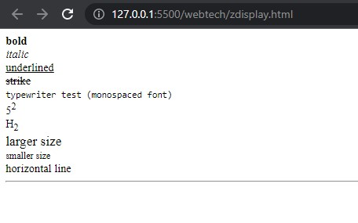

Presentational Elements
- Anything that appears in a < b > element is displayed in bold.
- The content of an < i > element is displayed in italicized text.
- The content of a < u > element is underlined with a simple line.
- The content of an < s > or < strike > element is displayed with a strikethrough, which is a thin line
through the text.
- The content of a < tt > element is written in monospaced font (like that of a teletype machine).
- The content of a < sup > element is written in superscript; it is displayed half a character ’ s height above
the other characters and is also often slightly smaller than the text surrounding it.
- The content of a < sub > element is written in subscript; it is displayed half a character ’ s height beneath
the other characters and is also often slightly smaller than the text surrounding it.
- the < big > element used to make the contents of this element one font size larger than the rest of the text surrounding it.
- The < small > element is the opposite of the < big > element, and its contents are displayed one font size
smaller than the rest of the text surrounding it.
- The < hr / > element creates a horizontal rule across the page. It is an empty element, rather like the
< br / > element.
- Example:
< b >bold< /b >
< i >italic< /i >
< u >underlined< /u >
< s >strike< /s >
< tt >typewriter test (monospaced font)< /tt >
5< sup >2< /sup >
H< sub >2< /sub >
< big >larger size< /big >
< small >smaller size< /small >
horizontal line< hr >
- The output displayed as:
